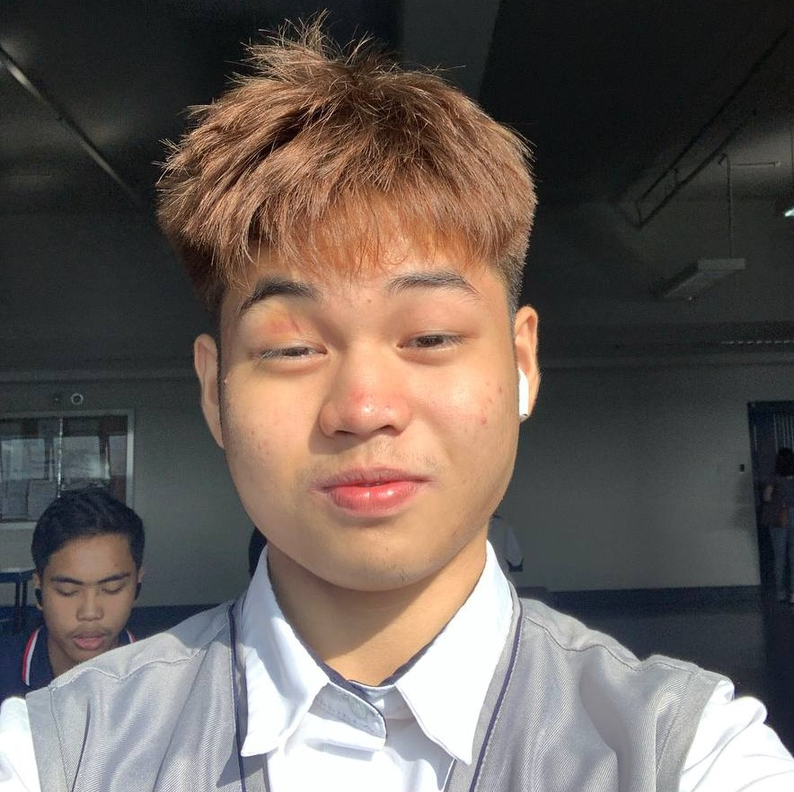

- Name is Gherimo Liwanag, also knowned as Gheomophotography
- age is 16
- nationality is filipino
- originated at philippines
- self-taught photographer
- graduated highschool at Village Montessori School And Colleges
- favorite food is anything meat related
- loves boxing and anytype of mma sports
- very handsome, nice, and loving person
- fascinated by computer science and easily attracted to sci-tech stuff
- favorite color is black
- currently studying senior highschool at sti sjdm
- loves videogames like minecraft, league of legends, rust, and other more
Hi, my name is Gherimo Liwanag and this is the story of how I fell in love with photography. It was almost Christmas by the year 2022, it was my first time using Instagram, and I've been getting reels and posts about photography. Suddenly I became so fascinated and curious about photography that I asked my mom If she could buy me a DSLR camera at that year's Christmas. She told me we had one just lying around in one of our cabinets, my heart started beating right out of my chest from the excitement that I had felt that day, I was so excited that I didn’t get to sleep that night and literally went outside to shoot anything I could see at Savano park, and it was 3 in the morning, I packed the camera and went out with my bike, at first I didn’t know what I was doing, so I just shot some cats I saw by the dumpster by the park, I didn’t care what other thought about what I was doing, and that’s how excited I was. Later that day, I started searching on YouTube to how to operate a DSLR camera, and I researched photography all that day. The next day, I stumbled on YouTube that there is something called street photography, I tried it and suddenly became so anxious but I pushed myself to be better at photography. People became interactive and everyone thought I was a journalist or something. They kept asking ” What is the picture for?” and I just smiled because I didn’t know what to answer. After taking pictures, I said to myself, “These pictures feel boring”, and I worked on photo manipulation next, at this point, I was so confident with my work, that people were asking if I was doing commissions and if I could shoot their events. Then school started, and figured out my photography needed to be put to a stop for a bit.